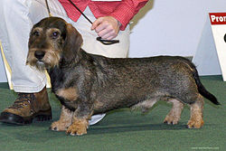

Rövidszőrű tacskó
A tacskó alapvetően vadászkutya, mindamellett nagyon jól alkalmazkodik a városi tartáshoz is. Kotorékeb, ezért aki erdőközelben tartja tacskóját, annak számolnia kell azzal, hogy elszökhet vadászni. A vadászatban az önállóság a legnagyobb erénye, ezért az életben is nagyon önálló és akaratos. Tartása következetességet igényel. Rövid lábai ellenére sportos és mozgékony. Makacs és önfejű természetű. Marmagassága: 16-26 cm, tömege: 3,6–9 kg. Az ősi, már a rómaiak korában is ismert borzebek egyenes leszármazottjának kell tekintenünk, bár csak a 18. században nyerte el mai formáját. A tacskók gerincoszlopa sérülékeny, és idős korukban gyakran sérvben szenvednek, ami hátsó végtagbénulást is okozhat. A gyerekek hűséges pajtása, figyelmes jó barát. A tacskó mérete: 26-37 cm. Tömege: A standard méretűnél: 10 kg-nál kisebb; törpeméretűnek 4 kg-nál kisebb; nyúlvadász (kaninchen) tacskónak 3,5 kg-nál kisebb. A rövid és hosszú szőrű tacskók bundája egyszínű (vörös), kétszínű (fekete vagy barna cser jegyekkel) vagy tiger. Igen értelmes, de rendkívül érzékeny, "sértődős" kutya, a goromba bánásmódot nehezen tűri. Kiválóan alkalmazkodik a városi körülményekhez, és mint rokonszenves kis testű, nyugodt fajtát, városi tartásra különösen ajánlják. Minden fajta tacskó vadászkutya. A rövidszőrű tacskó mindhárom fajtájának a standardja megegyezik egymással csak méretben van eltérés. A standard tacskót súly szerint szelektálják. Jelenleg ez 10 kilóban van maximálva, de folyamatban van a méretbesorolás változtatása. Ugyanúgy mint a törpe és kaninchen tacskónál mellkas körméretben fogják meghatározni. A törpe tacskó mellkas körmérete 35 cm-ben, míg a kaninchen tacskónak 30 cm-ben van maximálva.